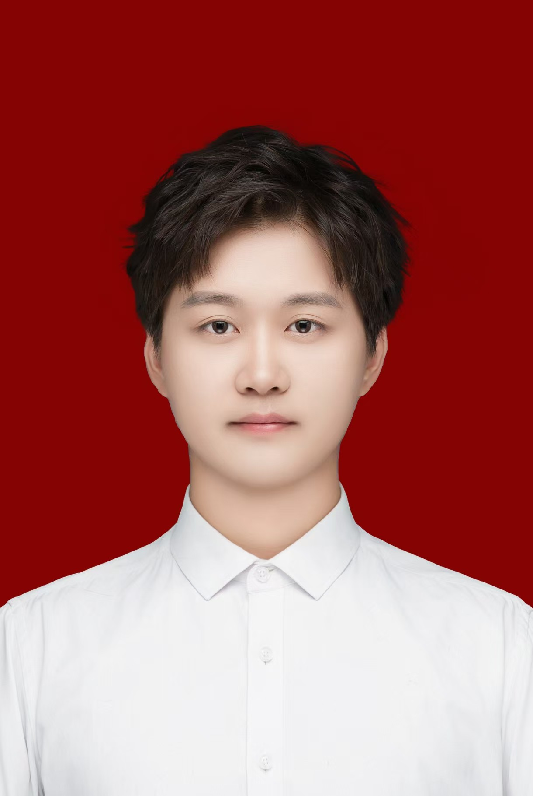

| 姓名 | 周蒴 | 性别 | 男 | 年龄 | 20 |  | |
|---|---|---|---|---|---|---|---|
| 籍贯 | 山东枣庄 | 联系电话 | 17606291120 | 电子邮箱 | 3289790478@qq.com | ||
| 学历 | 本科 | 健康状况 | 良好 | 婚姻状况 | 未婚 | ||
| 求职意向 | 前端开发工程师 | 专业 | 软件工程 | 毕业院校 | 烟台理工学院 | ||
| 技能证书 |
|
||||||
| 个人特长与爱好 |
听歌 游泳 书法 太极 劲扇 |
||||||
| 项目经历 |
个人博客网站开发 数据分析与可视化项目 |
||||||
| 自我评价 |
我是一位活泼开朗的男生，性格外向且富有好奇心，喜欢与人交流并探索新事物。 作为一个天蝎座，我性格中带有一些神秘感和强烈的目标感，做事专注且富有毅力，一旦确定目标就会全力以赴。 我目前对计算机技术和编程非常感兴趣，尤其是前端开发和网页设计。 我熟练掌握HTML、CSS和JavaScript，能够独立完成简单的网页开发项目。此外，我对数据分析也有一定的了解，能够使用Python进行基础的数据处理和可视化。 |
||||||